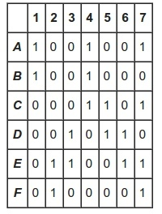
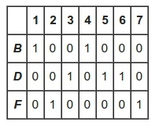
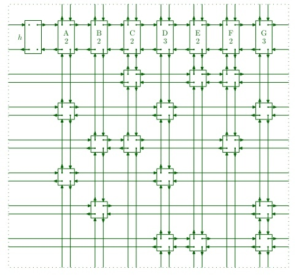

Knuth's Algorithm X and Dancing Links
Table of Contents
Knuth's Algorithm X
Knuth's Algorithm X 是一个递归回朔的算法,用来找出由0和1组成的矩阵A的涵盖问题的所有解.目的是找到行的子集,那么在每列出现数字1仅一次.如下例子的 A和它的解:
 
Algorithm X的算法流程如下:
1. If the matrix A has no columns, the current partial solution is a valid solution; terminate successfully.
2. Otherwise choose a column c (deterministically).
3. Choose a row r such that Ar, c = 1 (nondeterministically).
4. Include row r in the partial solution.
5. For each column j such that Ar, j = 1,
for each row i such that Ai, j = 1,
delete row i from matrix A;
delete column j from matrix A.
6. Repeat this algorithm recursively on the reduced matrix A.
如下的Dancing Links由Knuth建议有效实现Algorithm X.更多细节见Knuth的原文Dancing links.
Implement Dancing Links
Dancing Links的主要结构如下,使用4链表形式: 
主要操作是把节点x移除矩阵或恢复节点x,删除列的操作如下(行的操作把left和 right换成up和down即可):
# remove node x x.left.right ← x.right; x.right.left ← x.left; # restore x x.left.right ← x; x.right.left ← x;

具体实现代码
Applications
Sudoku

Polyonimo
如上同样创建一个Polyonimo的矩阵.
- 列 表示每个格子.
- 行 表示每个多边形放入每个格子.
如下的问题和解答: